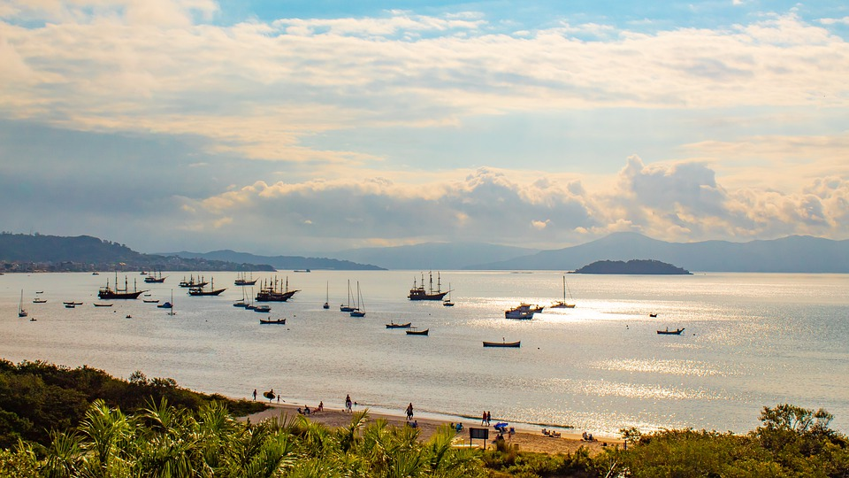
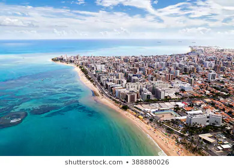
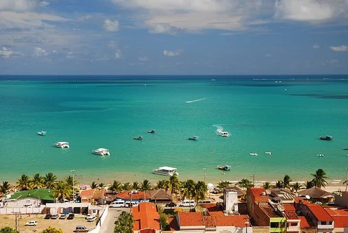
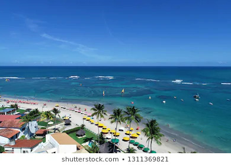
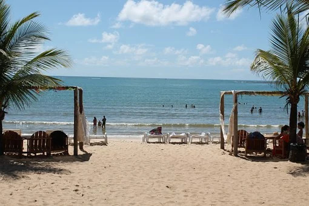
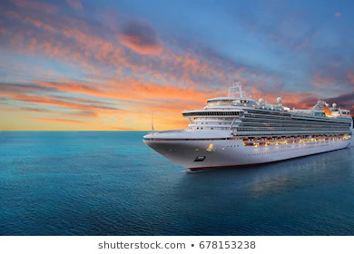
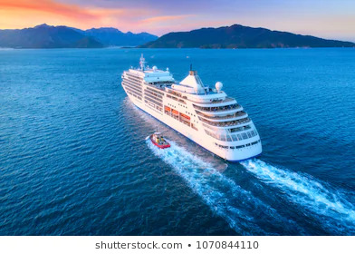
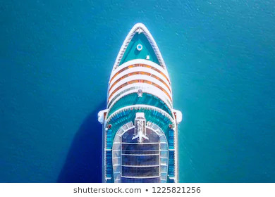

Dicas de Cruzeiros

Florianópolis

Maceió

Maragogi

Porto de Galinhas

Porto Seguro
Disponível em todos os cruzeiros
Diversidade em bares
e restaurantes
Atividades ao ar
livre
Entretenimento para
famílias
Serviços de bordo
especializado
Sejam bem vindos a Multi Viagens Cruzeiros .
Oferecemos a você,
uma apresentação inicial onde mostraremos tudo o que precisa
saber para aproveitar ao máximo nossos cruzeiros.
Nosso passageiros contam também, com palestras sobre pontos turísticos e o que explorar nos destinos em
terra, nos destinos em que o navio atracar.
Além disso, para uma maior comodidade a você e sua familia, contamos com uma equipe de
seguranças e salva vidas para que nossos passageiros desfrutem a melhor experiência que a Multi Viagens Cruzeiros pode oferecer.
Principais destinos

KAUAI - EUA
Se você estiver em busca de um destino de praia, vai gostar de Kauai, um destino famoso por suas áreas para a prática de mergulho livre, e suas vista para a ilha.
Valor: R$ 4.200
Data: A definir

GALÁPAGOS - EQUADOR
Vale a pena conhecer suas lindas praias, formações geológicas e ao píer. Em algumas ilhas próximas, você também pode conhecer centros de reprodução das tartarugas gigantes que vivem até 150 anos,
Valor: R$ R$ 3.700
Data: A definir

Angra dos reis - Brasil
Angra dos reis é conhecida pelas suas inúmeras praias e pela biodiversidade da Ilha Grande, a maior ilha. Vila do Abraão é a principal vila da ilha e conta com restaurantes, bares e a Igreja de São Sebastião, no centro.
Valor:
R$ 2.800
Data: A definir